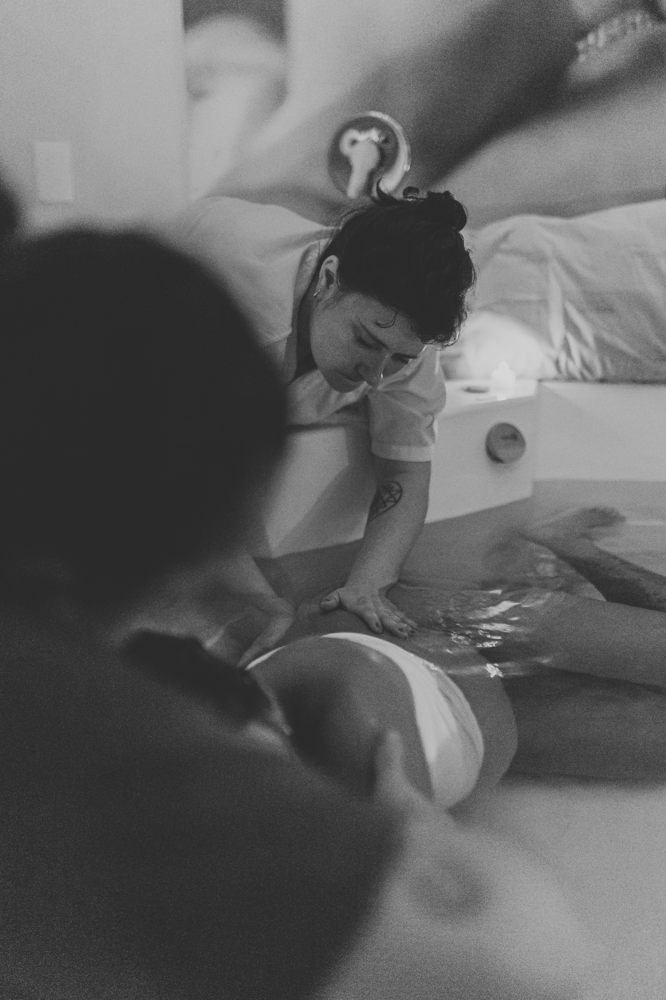
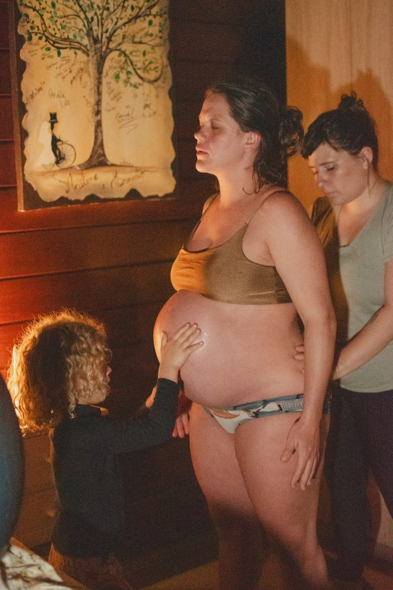
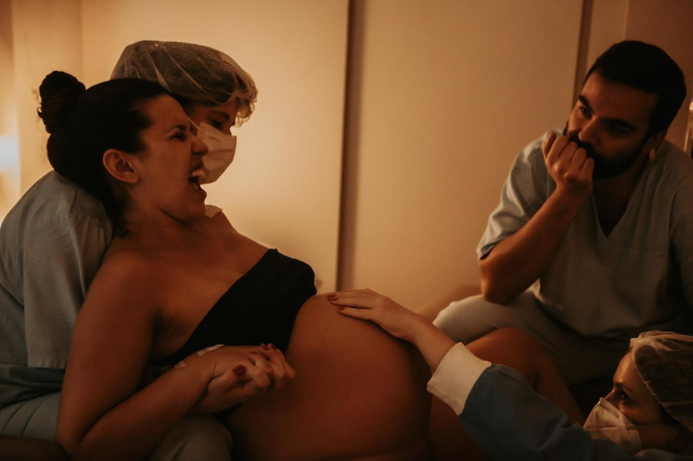

Gestar Parir Amar
Samanta Giannico · Doula
Doulagem para
gestantes brasileiras
Barcelona · São Paulo · Online


Samanta Giannico · Doula
Doulagem para
gestantes brasileiras
Barcelona · São Paulo · Online

Doula formada pelo GAMA — Grupo de Apoio à Maternidade Ativa — e em Arte do Parto com Naoli Vinaver, parteira tradicional referência latino-americana em parto humanizado. Pedagoga pelo Instituto Singularidades, vice-diretora da ADOSP, palestrante no Siaparto. Mãe da Iris e da Flora.
Em 2012, depois de uma experiência de violência obstétrica, fundei o Gestar Parir Amar, iniciativa que desde então democratiza o acesso à informação sobre parto evidenciado. Criadora da plataforma e aplicativo Gestar, Nascer, Crescer e facilitadora dos workshops Do Gestar ao Parir.
Hoje vivo em Barcelona e atendo presencialmente brasileiras na cidade. Sigo atendendo online o Brasil e o resto do mundo. Tudo, sempre, em português.
"Vivi uma violência obstétrica e vivi um parto humanizado. Sei das duas experiências nos poros da minha pele."
Um olhar integrativo, sutil e singular ao processo da perinatalidade.



Escuta acolhedora, espaço seguro, sustentação afetiva ao longo de todo o ciclo gravídico-puerperal. Eu cuido de você enquanto você cuida do bebê.
Trabalho somático, mobilidade facilitadora, alívio não-farmacológico da dor, presença encarnada no parto. Respirações, posições, hidroterapia, rebozo, Spinning Babies.
Educação perinatal baseada em evidências, plano de parto co-construído, autonomia para suas decisões. Conhecimento é poder durante a gestação, parto e puerpério.

Atendo brasileiras em Barcelona e área metropolitana. Pré-natal em consultórios parceiros ou no seu lar. Parto em domicílio, casa de partos ou hospital — público (Clínic, Sant Joan de Déu, Vall d'Hebron, Sant Pau, Hospital del Mar) ou privado (Dexeus, Teknon, HM Nou Delfos, Quirónsalud).
Para brasileiras em qualquer lugar. Pré-natais por videochamada, plano de parto co-construído, biblioteca virtual completa, plantão por WhatsApp e suporte às decisões durante o trabalho de parto.
Em viagens ao Brasil, mantenho agenda presencial em São Paulo. Combinamos com antecedência.
Por videochamada, 30 minutos. Você me conta sobre sua gestação, seu momento e suas dúvidas. Sem compromisso — é um momento para nos conhecermos.
Definimos juntas o caminho que faz mais sentido — Acolher, Cuidar, Sustentar ou Online — ajustando à sua singularidade.
Assinatura do contrato, primeiro pagamento e agendamento do nosso primeiro encontro de pré-natal.
Encontros, plantão WhatsApp, plano de parto, parto e visitas de puerpério — seguindo o ritmo da sua gestação.
Visitas de puerpério, suporte em aleitamento e adaptação familiar. Fechamento do ciclo.




"A Samantha foi fundamental para a minha entrega ao parto. Ela me ajudou a romper todas as crenças e barreiras que me distanciavam de um parto natural. Durante o parto, sentia que sua presença, silêncio e palavras sempre chegavam no momento certo."— Isabella Lellis
"A Samantha tem o dom da escuta, uma sensibilidade e intuição de saber dizer exatamente o que você precisa escutar. Como se chegasse com as peças de um quebra-cabeça que estavam faltando. Uma lanterna em uma caverna escura."— Izabel Nobre
"Sem palavras, você foi impecável! Um apoio amoroso extremamente essencial e com várias ferramentas pra manejar a situação. Me senti 100% cuidada, zelada, vista, e por uma mulher forte, que sustenta o trabalho. Gratidão pelo seu serviço, é de tirar o chapéu!"— Mariana Louver
"A doulagem fez muita diferença pra gente, e nós pudemos experimentar tudo com mais segurança e autonomia. Fomos recompensados com um parto lindo. A Jef sempre consciente, sem sedações e sempre tratada com respeito."— Jéssica · Doulagem social
"Os nossos encontros me fizeram ter um parto seguro — e digo seguro de estar segura, tranquila e confiante. Ter você como doula e rede de apoio foi essencial para que eu acreditasse em um parto de confiança e tranquilidade."— Mãe da Helena
Depoimentos reais de gestantes acompanhadas.
Quando quiser conversar, estou aqui. O primeiro encontro é por minha conta — sem compromisso, sem pressão, sem fórmula. Só uma escuta para descobrirmos juntas se faz sentido.
Por gestar. Por parir. Por amar.
Gestar Parir Amar